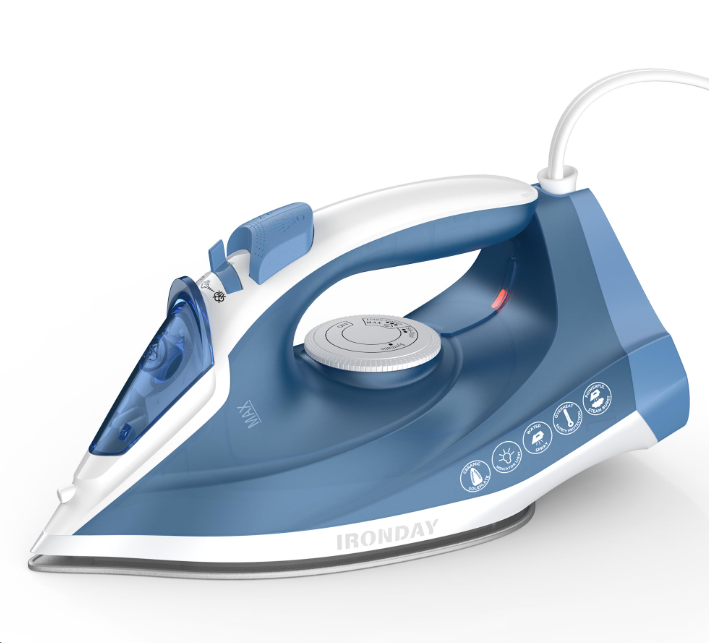
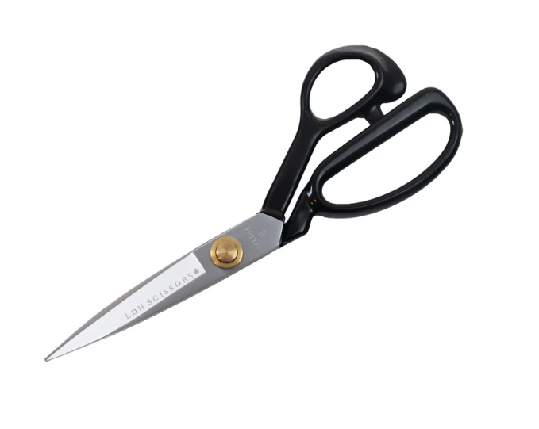
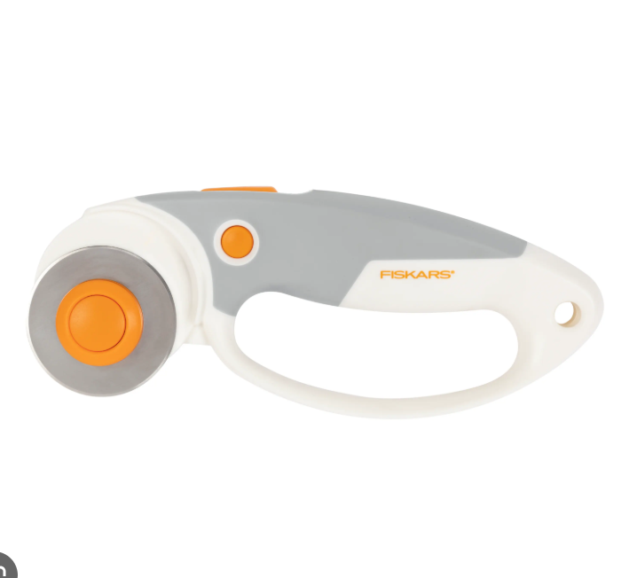
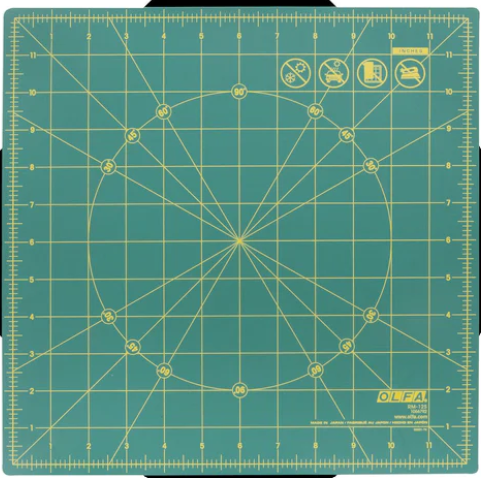
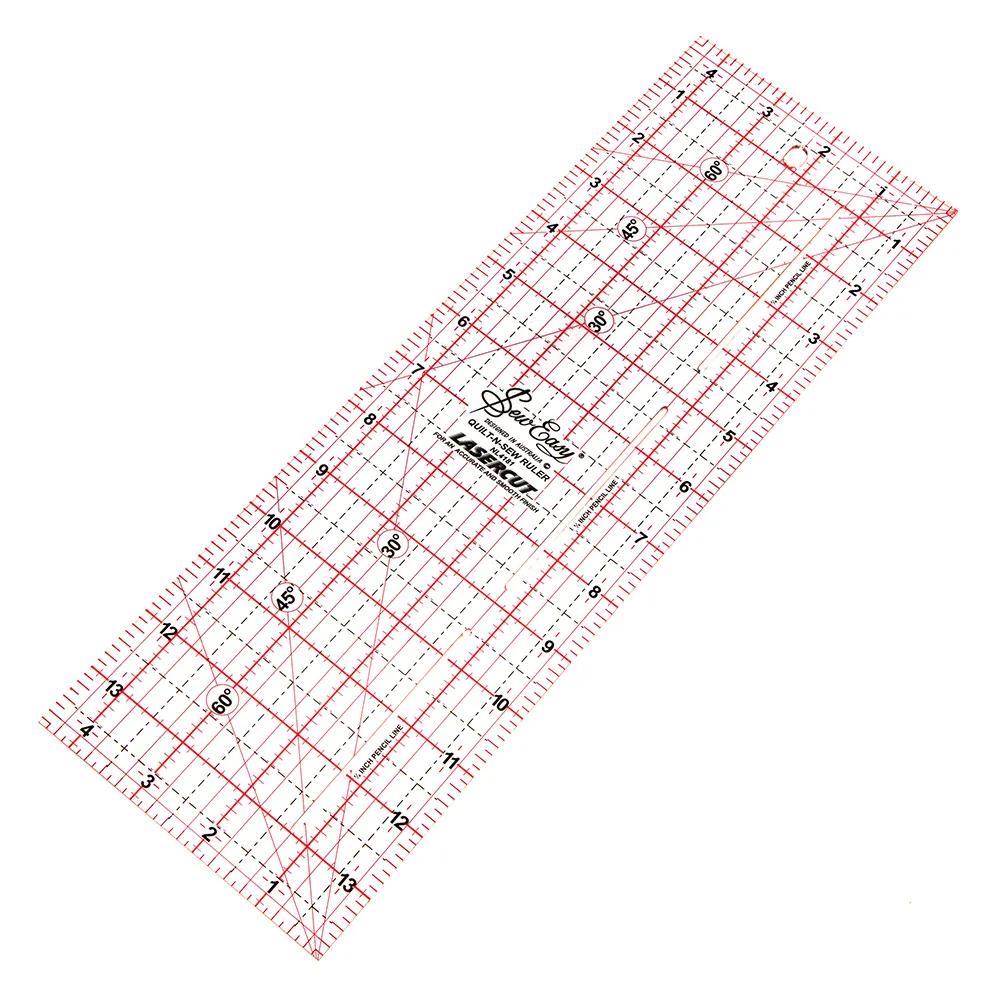
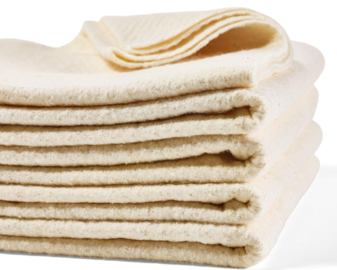

What You'll Need to Get Started
Before you start your first quilt, it helps to know exactly what you're working with and more importantly, what's actually worth your money. Quilting has a bit of a reputation for requiring lots of specialty tools, but as a beginner you really only need a handful of essentials to get started. Knowing what those are before you walk into a craft store can save you a lot of time, confusion, and unnecessary spending. Below you'll find a breakdown of the must-have beginner tools and supplies, along with an explanation of what each one does and why you need it. I've also included some tips on where it's worth splurging for quality and where a budget-friendly option will do the job just as well. As a college student myself, I know that every dollar counts! Click each photo to navigate to where you can buy the item online. If you want to shop in person, click the button below!
The Basic Tools
These are the things you'll need not only for quilting, but to sew anything. You don't need to splurge on these, and can even purchase them second-hand.

Sewing Machine
To join fabric together, and a substitute if a long-arm isn’t available.

Seam Ripper
A tool used to correct any mistakes made. This will become your best friend during your first few projects.

Iron and Ironing Board
To flatten fabric throughout the process. This will make sewing much easier and improve the final outcome.

Pins or Clips
To join fabric pieces together before sewing begins. Some sewers prefer one over the other, but both will get the job done.

Fabric Scissors
To cut smaller or rounded pieces of fabric and thread. Make sure you don't cut paper with these, or they will become dull.
Quilting Specific Tools
While these tools aren't required, they will make your quilting journey so much more enjoyable. My first projects were made without any of these tools, and the quality of that work proves it. With this supplies you will save time and have straighter cuts, and the process will be much easier. Though your small projects may not need these tools, once you start making larger quilts you will be happy to have them.

Rotary Cutter
A cutting tool with a round blade used to cut fabric in precise straight lines. Used with a cutting mat and acrylic ruler to ensure cuts are accurate. Fabric scissors can be an alternative.

Cutting Mat
Use this along with a rotary cutter so you don't scratch any other surface. The fabric is placed on top of the mat when cutting.

Ruler
Use this along with the mat and rotary cutter to ensure straight cuts. Squares and other shapes can also be measured while cutting.

Long-Arm Maching
A quilting machine used to sew a design on the quilt while connecting the layers. The machine head can move freely, allowing for endless designs to be created. Most quilters do not have one, so they take their quilt layers to a person or place that has one. You do not need one for small projects.
The Materials
These are the parts of your quilt that will make up the final product. These are something I would definitely recommend splurging on. Higher quality fabric and thread will make your quilt last years, allowing you to pass them on for generations. Better thread will also be a lot easier to work with, as it breaks less.

Batting
This is the thick material that is used between the layers as a soft foundation for the quilt. Commonly made from 100% cotton or a cotton blend.